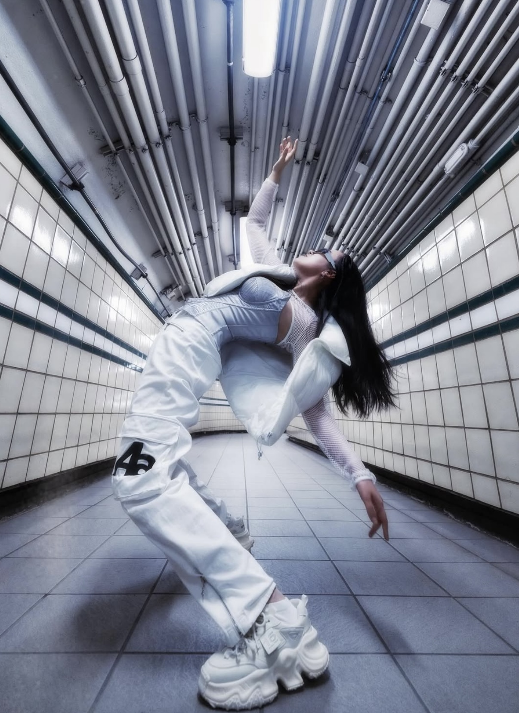

Jazzfunk is a high-energy dance style that blends elements of jazz, hip-hop, and street dance, creating a dynamic and expressive movement vocabulary. Known for its powerful execution, intricate footwork, and strong emphasis on musicality, Jazzfunk is widely popular in the commercial dance industry, often seen in music videos, live performances, and dance competitions.
Self-Expression and Confidence BoostJazzfunk encourages dancers to embrace their individuality, using expressive movements, sharp isolations, and fluid transitions. The fusion of sass and strength helps build confidence, making it a perfect style for those looking to step out of their comfort zones.
Full-Body Workout and Fitness BenefitsWith its fast-paced and high-intensity choreography, Jazzfunk improves stamina, flexibility, and coordination. It engages the entire body, strengthening muscles while enhancing overall physical endurance.
Versatility in Dance and PerformanceSince Jazzfunk blends different dance styles, it allows dancers to be more versatile. It incorporates elements of jazz technique, hip-hop grooves, and even contemporary fluidity, making it adaptable to various performance settings and choreography styles.
Great for All LevelsWhether a beginner or an experienced dancer, Jazzfunk offers an exciting and accessible way to explore movement. Its energetic nature makes learning fun while pushing dancers to grow and challenge themselves.